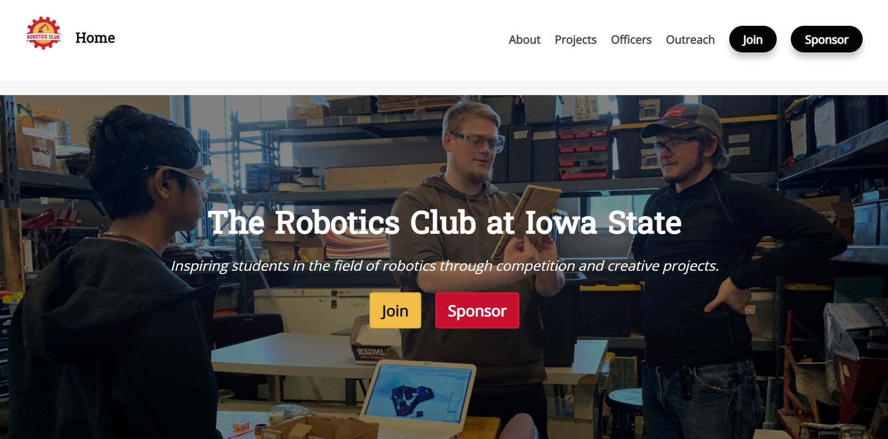
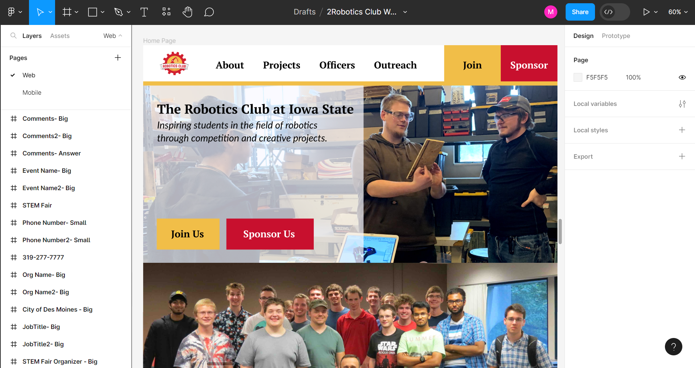

Robotics Club Website Redesign
Skills: Usability Testing, Audience Analysis, Persona Creation, Stakeholder Analysis, Qualitative Research, Prototyping, Implementation, Usability Testing on Mobile Devices
Tools: Figma, Usability Lab, Camtasia, Tobbi Eye Tracking Software, WordPress
Problem:
The Robotics Club at Iowa StateTM aims to teach students about robotics as they build robots to compete against other collegiate groups. As a result, the club wanted its website to promote the club to gain new members and sponsors and inform faculty, students, robotics enthusiasts, and community members about the club. However, the website did not accomplish those goals and was not viewed positively by its audience. Thus, it needed a design refresh.
View the old website design's homepage, projects page, and officers page
Step 1: Create website personas.
Personas of the website’s audience members were created using an assumed audience to help stakeholders understand audience needs, goals, and limitations. I used these personas to show the stakeholders how the website does not currently meet the audiences’ needs and propose to them that the website needed to be improved.
Step 2: Conduct stakeholder interviews.
Interviews were conducted with the four key Robotics Club officers to understand what they wanted from the website. Overall, I found that the stakeholders wanted a credible, professional, and updated site. They believed the current site’s outdated content prevented it from being functional. The interviews showed that the stakeholders agreed that the site needed a redesign.
Step 3: Perform usability testing on the original club website.
Usability tests were performed on the original club website with five people representing various audience types to gain concrete information about the audience’s thoughts about the website and their ability to utilize the site. I ran two tests in a professional usability lab, using eye-tracking software. While all participants could accomplish almost every given task, no participant wanted to join or sponsor the club fully based on the site. The participants ended the study with many questions about the club based on what they learned from the site. Moving forward, audience members wanted updated information, a clear way to contact the club, and more details about the club. Overall, understanding the actual audience’s needs also pointed to the need for a site redesign.
Step 4: Outline low-fidelity sketch ideas.
Using the findings from the stakeholder interviews and usability tests, low-fidelity sketch ideas were created for a redesigned site. These functioned as the brainstorming process for potential ways to fix the site’s issues.
View the Low-Fidelity Figma mockups.
Step 5: Design high-fidelity mockups for web and mobile devices.
Building upon the low-fidelity sketches, high-fidelity mockups were created of the redesigned site for desktop and mobile devices in Figma. I chose to create high-fidelity mockups to see how users interacted and perceived the design before building it, but I wanted the design to still function like a traditional website. As a result, the Figma designs also allowed for interactions, such as going between pages, to see how a user would navigate through the design if it was an actual site.
View the High-Fidelity Figma mockups.
Step 6: Conduct usability testing on the prototype.
A second round of usability testing was held using the Figma prototype in a professional usability lab. Five participants tested the desktop version, and one participant tested the mobile version. Participants’ opinions of the site improved, and they had fewer questions about the club. 80% of desktop participants said they would definitely join the club, and 60% said they would definitely sponsor the club solely based on the website. Overall, participants wanted more photos, details about the club, and consistency across navigating the website. However, the study proved the prototype showed improvement at being a user-centered design.
Step 7: Complete the final website redesign.
The prototype was implemented into a WordPress website. In addition, improvements were made to the design based on the usability tests by fine-tuning element proportions, adding more multimedia elements, and making navigation consistent.
Read a memo outlining the redesign.
Results:
This project resulted in an user-centered, website redesign for the Robotics Club at Iowa StateTM. Multiple rounds of usability testing ensured that audience needs were met, assisting the site in persuading potential members and sponsors to get involved. The club is currently working to make the redesign available to the public.